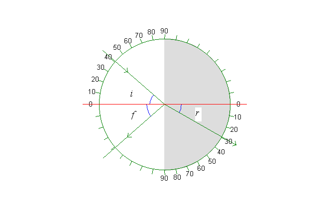

Graph:

A beam of light is refracted when it passes from air to water. The graph depicts a semicircular tub of water seen from above. The axis of incidence is the red line. The angle of incidence i can be varied with the scroll bar on the panel to the left. Of course, this also changes the angle of reflection f and the angle of refraction r. This variation can be seen in the table.
Table:
| Refraction in water | |
| refractive index , n | 1,334 |
| wavelength/nm, green | 546,1 |
| incident angle i/° | 41,0 |
| refracted angle r/° | 29,5 |
Memo:
Refraction in water:
The big scrollbar to the left changes the angle of incidence, i (and consequently the angle of refraction, r).
The track bar to the upper left changes the direction of the ray. Click the »Meter, F6« button above the illustration (or press »F6«) to make an angle meter appear. Or try »Marks« and »Normal«. Make a print and write the angles of incidence i and refraction r on the print.
Make exercise 1 and 2. The exercises are in the Online Help (»Ctrl«+»F1«).
Graph, table and memo are shown above. There is a description in the memo for each simulation and there is a table for most of them.
Exercise 1
Measure a series of connected values of the angles of incidence, i, and refraction, r, and draw a graph of sin(i) as a function of sin(r). Use the graph to determine the index of refraction for water. Notice that the data can be found in the table. If the table is not in view, click the menu option View | Table (or »Ctrl«+ »T«).
Exercise 2
Which is greater, i or r, when the ray passes from air to water?
Which is greater, i or r, when the ray passes from water to air?
Find the limiting angle.